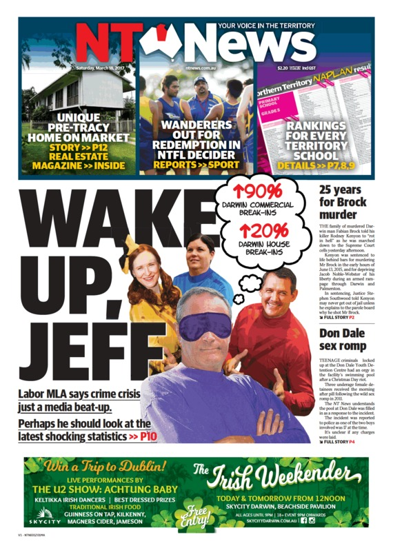

Experienced Troppo readers will be aware that I fairly frequently post articles about topics relating to crime and punishment, especially crime statistics and patterns. Quite often those articles consist partly of impassioned diatribes against sensationalist tabloid crime “shock horror” stories, usually but not always published by the local Northern Territory News.I posted just such an article again on the weekend, but put it on The Summit blog published by Charles Darwin University School of Law rather than here at Troppo. The details of Territory crime statistics and debate about them are unlikely to be of any great interest to the great majority of Troppo readers. Nevertheless there are some more general issues that come out of this most recent discussion that I think are potentially of wider interest.
My weekend article was provoked by a NT News story ridiculing neophyte Labor MLA for the inner Darwin seat of Fong Lim Jeff Collins for having the temerity to suggest in the Legislative Assembly last week that tabloid stories about an out-of-control crime wave in Darwin might be just a trifle simplistic and exaggerated. Outrageous! the News thundered: “Perhaps he should look at the latest shocking statistics – Darwin commercial break-ins up 90%; Darwin house break-ins up 20%.” (They are referring to the latest NT PFES crime statistics summaries for the year to end January 2017).
The thing is that the NT News story was quite right as far as it went, it just lacked context and the newspaper was engaging in blatant cherry picking. When you look at the statistics in full and over a longer period of time, they actually show pretty much exactly what Jeff Collins was saying. I’ve been watching NT crime statistics closely for over 20 years, ever since I founded Victims of Crime NT in 1996 after my wife’s mother was murdered. The truth is that the figures go up and down, often by seemingly significant percentages, from year to year. They always have and probably always will. Analysing the figures, finding the reasons for changes and taking remedial action where necessary is why PFES collect the statistics. Taking particular short periods, small areas and particular offences in isolation may be a good way to get a circulation-boosting headline but it doesn’t achieve much else. In fact, as Mr Collins observed, it could potentially needlessly create a “climate of fear and loathing in the community”.
Nevertheless, in most cases it doesn’t. What actually happens in practice is that media and government habitually engage in a complex theatre sports game with unwritten but well understood rules. The relationship is mostly symbiotic rather than parasitic. The more thoughtful and experienced members of government understand that the mainstream media has a powerful commercial incentive to publish sensationalist, simplified “Hey Martha” stories that will attract eyeballs and sales. That is especially true in these days of the Internet, the drying up of the so-called “rivers of gold” of classified advertising, and the plethora of free sources of news and information from social media and other sources. The NT News is especially good at finding and publishing those sorts of stories, and as a result has commercial success to a significantly greater extent than most other newspapers, many of which are rapidly going broke. If you expect any mainstream media organisation to publish a worthy and thorough exposition of crime statistics in context and with proper explanations and qualifications, you are going to be disappointed every time. For the great majority of readers a story like that would be downright boring and they wouldn’t read it. An accurate story on NT property crime rates would say: “2016 property crime a bit higher than 2015 but lower than 5 years ago and a lot lower than 10 years ago”. Fair and balanced for sure, but who would actually read it?
Fortunately, I suspect that at least the more thoughtful senior media people realise that a lot of their stories in areas like this are simplistic at best, but equally realise that commercial survival trumps thorough, worthy coverage every time. Moreover, they will usually cut a fair bit of slack for a government that appears to be at least making a reasonable effort at tackling the problems of (say) crime. Thoughtful media and government people all know that there are no “magic bullet” solutions to crime rates or for that matter the issues of punishment and treatment of juvenile offenders currently being examined by a royal commission. But there are certainly some things that can be done by government, and it is certainly true that crime in the Northern Territory is a very serious problem. Our crime rates in just about every category are significantly worse than anywhere else in Australia, and although they have been slowly improving over the last decade or so they remain much worse than elsewhere.
That was the real problem with Jeff Collins’ statement in the Legislative Assembly and his subsequent Channel 9 interview. Quite apart from the inevitability of tabloid media coverage of crime stories, the great majority of the general public is never likely to be interested in detailed and balanced stories on crime statistics or crime and punishment theory and practice. Nor are they likely to be paying close attention even to simplified tabloid stories. Even if the media had covered Jeff’s parliamentary speech in a more careful and balanced way, the message that a high proportion of the reading public would have received (however unfairly) was that he wasn’t taking crime seriously enough. Moreover, that was always going to be compounded by the fact that he made his speech only a day or two before the monthly crime statistics were to be published by Police Fire and Emergency Services. Given that Jeff is apparently Assistant Minister to Chief Minister Michael Gunner on police matters, he should have not only known that that was the case but also known that those figures were going to show a very significant “spike” in break-in offences to both homes and commercial premises over the Christmas school holidays. While that doesn’t actually mean that there is a “crime wave” as such, it was entirely predictable that making a speech in Parliament suggesting that the media’s coverage of crime was sensationalist and simplistic was always going to be met with a story suggesting that Jeff was one of those “elite” politicians who was out of touch with the concerns of his electorate. If you lead with your chin you shouldn’t really be surprised when your opponent floors you with a well directed uppercut. Politics is a tough game, but I have no doubt that Jeff Collins will learn the necessary lessons.
http://www.theage.com.au/victoria/i-sleep-with-one-eye-open-booming-cranbourne-sees-a-home-invasion-explosion-20170317-gv0poz.html
Here's the Victorian equivalent. Perhaps they should get the late 90s figures as a comparison (although Packenham and Cranbourne hardly existed then).
‘there are no “magic bullet” solutions to crime rates …and it is certainly true that crime in the Northern Territory is a very serious problem.’
It is interesting how the Northern Territory can be such an outlier for crime statistics of a first world country, and yet, being only one percent of the total population of Australia, one would think that federal government resources could be utilised to find a once and for all solution to this problem. It’s not like one has been commissioned with solving the crime problem of a third world metropolis such as Cairo with over nine million inhabitants.
One suspects that the cause may be more of a political culture that could be inhibiting possible solutions such as police powers, court sentencing, right to work laws or restricted dole payments.
Do our criminology academics ever look at countries with low crime rates such as Singapore, Switzerland or Japan and see if they do things differently there? Also, crime rates might have been similar a decade ago but what about generations past? Was the crime rate in the Territory significantly different to the rest of Australia in the 1930s?
NT isn't an outlier -- Perhaps our criminology people have been looking at other places with groups in endemic poverty and otherwise moderate crime rates, and realize that more police powers, sticking people in jail, and trying to restrict welfare payments won't provide any long term solution.
It's unclear why crime rates have dropped for ages in most developed nations incidentally (including Aus), but it's certainly multi-factorial and not just the factors you mention (otherwise places like the US would have little crime, having the most people in jail, a comparatively large police force, and poor and often restricted welfare). There are good analyses of this floating around although I don't think there is strong agreement on the strength of different causes.
Shorter Ken: If politicians tell the truth they'll get beaten up by liars. So they shouldn't tell the truth.
I really can't see your point here mate - you seem to be blaming the victim (Collins) rather than the perpetrator (the yellow press).
Sadly politics is a job requiring fairly ruthless pragmatism, which in a single newspaper town may require a smidgin of discretion. It would have been possible for Jeff to ventilate the facts without leaving himself exposed to tabloid attack.